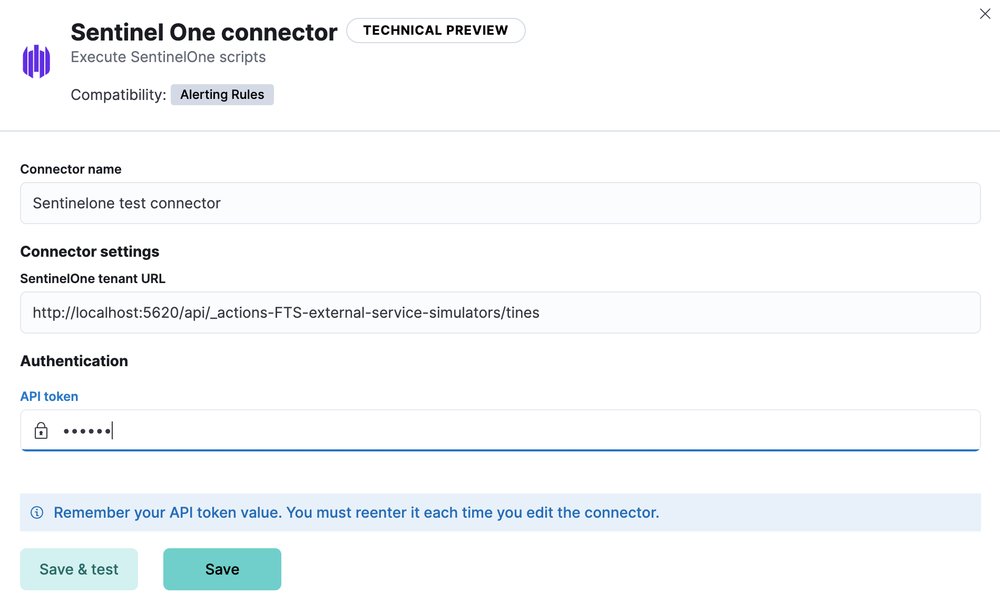

SentinelOne connectoredit
This functionality is in technical preview and may be changed or removed in a future release. Elastic will work to fix any issues, but features in technical preview are not subject to the support SLA of official GA features.
The SentinelOne connector communicates with SentinelOne Management Console via REST API.
Create connectors in Kibanaedit
You can create connectors in Stack Management > Connectors. For example:

Connector configurationedit
SentinelOne connectors have the following configuration properties:
- API token
- A SentinelOne API token created by the user.
- URL
-
The SentinelOne tenant URL. If you are using the
xpack.actions.allowedHostssetting, make sure the hostname is added to the allowed hosts.
Test connectorsedit
At this time, you cannot test the SentinelOne connector.